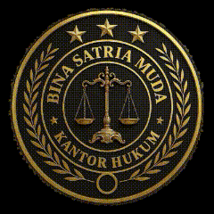
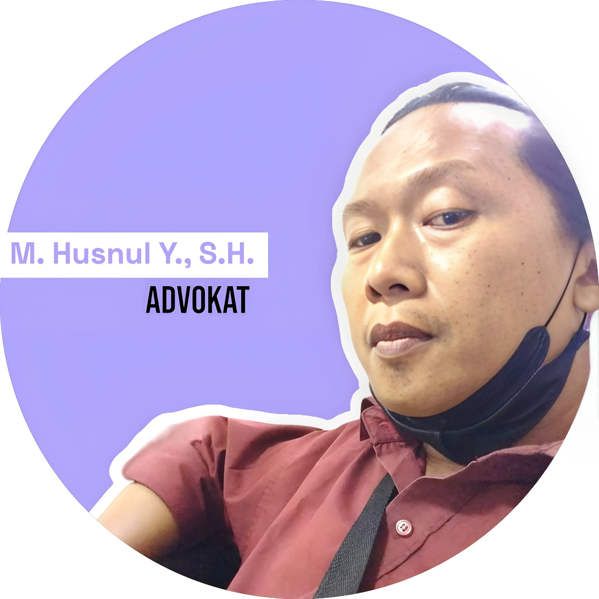
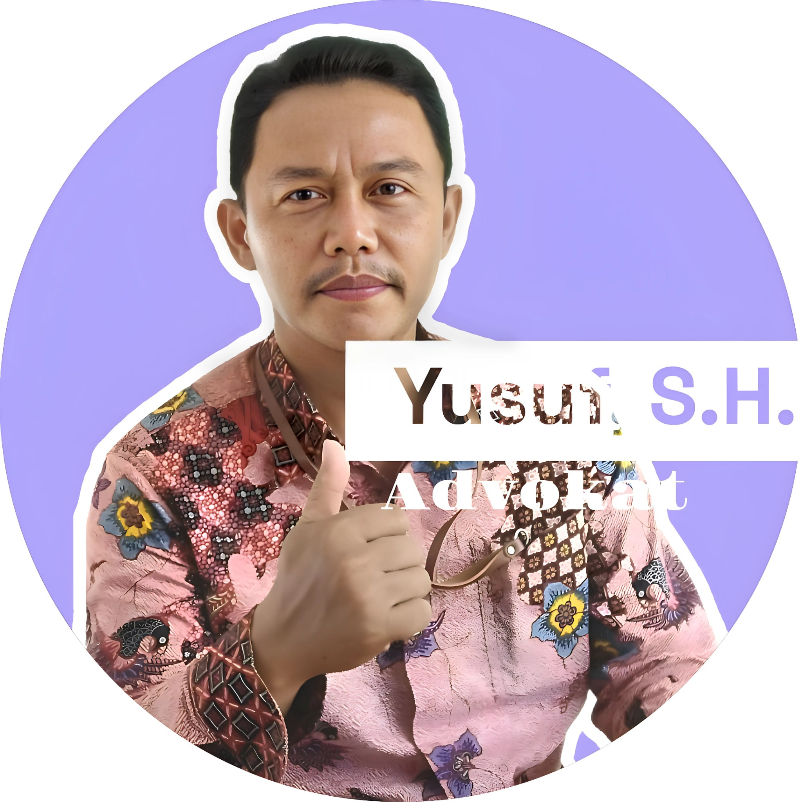
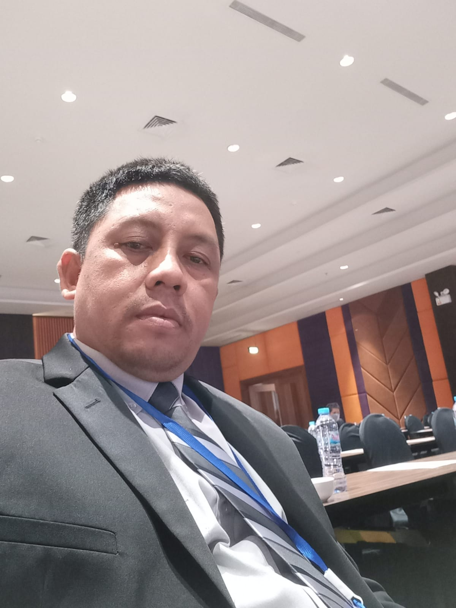

BSM LAWCARE hadir untuk mendengar, mendampingi, dan memperjuangkan hak hukum Anda — secara profesional, humanis, dan tegas.

Founder • Konsultan & Pendamping Hukum Strategis

Ahli Perjanjian & Legalitas Aset Tanah

Partner • Spesialis Hukum Pidana & Perdata